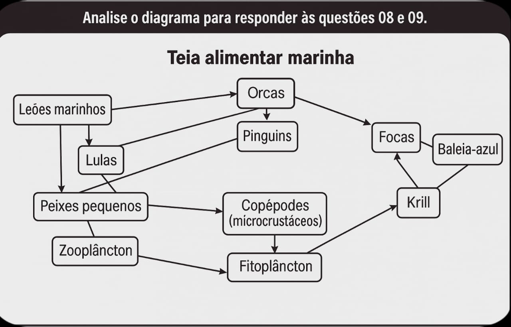

13. Sobre o processo de absorção física de sequestro de carbono, é correto afirmar que ocorre, predominantemente:
15. Leia a reportagem.
Em 2018, apareceu no oceano Atlântico uma grande faixa de algas marrons que foi chamada de grande cinturão de sargassum (sargaço). Os pesquisadores acreditam que esse fenômeno se deve a uma combinação de vários fatores, dentre os quais podemos citar as mudanças nas correntes marítimas e os padrões de ventos anormais ligados às mudanças climáticas.
O sargaço — às vezes chamado de floresta tropical dourada flutuante —, quando se dispersa em águas abertas, serve como um importante viveiro para filhotes de tartarugas e um refúgio para centenas de espécies de peixes.
No entanto, ele chega a prejudicar a passagem dos navios, tanto pelos problemas que acarreta para suas hélices e para seus motores, como pelo bloqueio ao deslizamento dos cascos.
Outro problema surge quando o sargaço chega às praias e começa a apodrecer, emitindo sulfeto de hidrogênio, um gás que cheira a ovo podre e cuja exposição tem sido associada a sintomas neurológicos, digestivos e respiratórios.
Em partes do México e do Caribe, moradores da região estão transformando o sargaço em papel, sabão, cosméticos, material de construção e biocombustíveis.
Sobre o fenômeno descrito no texto, é correto afirmar que:
18. A poluição marinha é um problema cada vez mais grave em todo o mundo, à medida que aumenta sistematicamente todos os anos por conta do descarte irregular de diferentes tipos de resíduos e da falta de medidas sustentáveis. No entanto, esse problema pode ser revertido ou, pelo menos, amenizado por meio de ações mais responsáveis do ponto de vista ambiental.
Assinale a alternativa que apresenta ações que indivíduos e empresas deveriam adotar para evitar a poluição marinha.
Leia o texto para responder às questões 21 e 22.
Em países tropicais, o sal é obtido nas salinas, grandes espaços nos quais a água do mar é exposta ao sol e ao vento. A água dessas piscinas rasas passa para o estado gasoso, deixando apenas o sal. Em seguida, o sal é retirado, limpo e refinado, permanecendo com uma alta taxa de cloreto de sódio. Depois disso, ele recebe uma série de aditivos, inclusive iodeto de potássio.
O iodo é um micronutriente essencial para o homem e outros animais, sendo encontrado no leite, nos ovos, em algumas frutas e legumes, nos peixes de água salgada e nos frutos do mar. Esse micronutriente é utilizado na síntese dos hormônios, a triiodotironina (T4) e a tiroxina (T3), produzidos pela tireoide, uma glândula que se localiza na base frontal do pescoço. Esses hormônios têm duas importantes funções: atuam não só no crescimento físico e neurológico, mas também na manutenção do fluxo normal de energia (metabolismo basal, principalmente na manutenção do calor do corpo).
No Brasil, desde a década de 1950, é obrigatória a iodação de todo o sal destinado ao consumo humano, a fim de diminuir a incidência de casos de Distúrbio por Deficiência de Iodo (DDI). Entre os sintomas mais comuns, a deficiência de iodo pode causar o aumento de tamanho da glândula tireoide (chamado de bócio ou papo), ganho de peso e pele seca. Já em crianças, entre os sintomas de DDI, destacam-se deficiência intelectual, desenvolvimento físico prejudicado e surdez.
Fonte
21. De acordo com o texto, é correto afirmar que
23. A Agência Nacional de Vigilância Sanitária (Anvisa) é quem estabelece a faixa de iodação do sal de cozinha no Brasil. Essa adição deve ficar entre 15 e 45 miligramas por quilograma de sal de cozinha, NaCl.
Fonte
No preparo de um alimento, foi adicionado 1,5 g de NaCl. De acordo com o valor estabelecido pela Anvisa para a iodação do sal de cozinha, a quantidade mínima de iodo, em mg, adicionada ao alimento, foi: